| ネットビジネス初心者が綴った月10万円稼ぐまでのPPCアフィリエイト実践記: ドメインすら知らなかったド素人が、 一体どのようにして月10万円まで稼げるようになったのか！？ その軌跡を綴った完全版！ | |
| ひろし | |
| UNKNOWN (2018) | |
[ 初月の発生報酬は 6,000 円 、 そして掲載停止 ]
[ アフィリリンク先ページ （ 販売ページ ） で審査に落とされることが多くなる ]
はじめまして、ひろしと申します。
この書籍はアフィリエイトのド素人である私が全くの未経験からネットビジネスを行い、学んだこと、失敗したこと、気づいたことを記し、月10万円達成までの全記録を公開したものです。
アフィリエイトを始めるようになったきっかけは、「今よりも収入の幅を広げたい」という思いが強くなってきたことでした。
結婚を機に独身時からの「自分が食っていければそれでよい」という思いから脱却しなければならない状況にいました。
もともと私は自営業として本業を持っており、日々はそちらで時間を取られていることがほとんどです。
一時は「本業の方で収入を拡大できないだろうか」と考えたこともありました。
ただ仕事の性質上、どうしても1人でできる仕事量に限界があり、それ以上仕事量を増やすのは困難な状況でした。
そのため本業もやりつつ、他の収入源を確保できる方法を探すようになりました。
そんなときに見つけたのが「アフィリエイト」です。
「アフィエイトは自宅に居ながら、PC1台で始めることができる。」という謳い文句。
しかも開始資金もあまりかからず初心者でも問題ない・・
まさに今の自分の状況にピッタリの副業でした。
そして月100万円以上稼いでいるアフィリエイターもごろごろいる。
これだけ聞くと、ものすごく魅力的な情報のように聞こえるのですが、ただその一方で私はその謳い文句を見て、
「本当に初心者でもできるのかなあ・・」
「100万円以上も稼いでる人って実際いるのかなあ・・」
「なんか胡散臭いなあ・・」
・・と感じたのも正直なところでした。
しばらくアフィリエイトに対して躊躇らっていたころ、たまたま友人と飲みに行く機会がありました。
友人と仕事やプライベート話で花を咲かせている折、
「俺、実はアフィリエイトで稼いでるんやわ」と突然のカミングアウト。
しかも月収100万円以上を安定的に出していて現在はそれだけで生活しているとのこと。
実際にアフィリエイトで利用しているASPの管理画面を見せてもらうと、そこには紛れもなく7ケタを表示している報酬額が目の前にありました。
こんな近くにアフィリエイトで100万円以上稼いでいる人がいることにビックリでした。
こういっちゃあなんですが、その友人はお世辞にも自分より頭がいいというわけでもなかったし、ビジネスセンスがあるようにも思えませんでした・・汗
そんな友人でも100万円以上稼いでいる。
「それだったら俺にもできないわけがない」という、
何かわけのわからない自信がスタートになりました(笑)
こうして私のネットビジネス物語がスタートします。
サイトの作り方も全く分からないド素人が、どのようにして月10万円を稼ぐことができたのか？
その物語の全記録をこの本に書きました。
「今よりも収入を増やしたいけど何をやったらいいかわからない・・」
「一歩を踏み出す勇気が出ない・・」
という方にお読みいただければ嬉しいです。
本業がある傍ら、なぜ私が副業にアフィリエイトを選んだのか？
そのことに関してお話ししておきたいと思います。
１．自宅で作業ができるから
私は自営業として本業を持っていますが、その一方で副業を行おうとすると、そちらにかけられる時間というのはどうしても限られてきます。
何か副業をと考えた時、一般的に考えられるのはアルバイトになるかと思います。
実際、私が自営業として軌道にのせるまでの間、アルバイトを掛け持ちして生活をしのいでいた時期がありました。
アルバイトは基本的に自給でお仕事をもらう形式です。
1時間900円とか1,000円とかでコンビニでレジ打ちをしたり、配送業者で荷分けをしたりします。
だいたい、4～5時間働くわけです。
ただ、ここで昔から思っていたことですが、その働く場所に行くまでに少なからず時間かかっていますよね？
私の場合、都内の端の方に住んでいるのですが、だいたいアルバイト先まで移動しようとすると少なくとも1時間はかかります。
往復で2時間。
交通費は出ますがこの「移動時間給」なんかはもちろん出ません。
「移動時間からすでに拘束されているような・・」
「実質的には自給900円ももらっていないよな・・」と考えるようになりました。
その一方で、「自宅で誰にも知られず副業ができる」
と知った私は飛び上がるような思いでした。
２．どこにいてもできるから
これは先ほどの自宅でできることと少し重なる部分もあるかと思います。
アフィリエイトは何も自宅なら自宅ででしかできないというわけではなく、PCさえあればどこでも行うことができます。
ファミレスであろうが、喫茶店であろうが、新幹線の中であろうが可能です。
もっというと実家の帰省中でもできるし、海外旅行中でもできます。
実は前からちょっと憧れていたんですよね。
「どこにいても仕事ができるノマドワーカー」という響きに(笑)
自分もそれができたら日常もさらに楽しくなるんだろうなとワクワクしながら行っています。
３．初期費用がほとんどかからない
初期費用がほとんどかからないというところも、私がアフィリエイトを始めていくうえで魅力的なところでした。
基本的にはドメインを取得したり、サーバーをレンタルしたりと費用が掛かってくる部分はありますが、それでもせいぜい月1,000～2,000円くらいのものです。
「月2,000円でもキツイ」というのであれば、無料ブログを利用して行っていく方法もあります。
費用をかければそれだけ結果が出るまでの期間が短くなりますが、やり方次第ではほぼ0円から始めることが可能です。
もちろん交通費も、それにかかる移動時間もかからないので、縛られる環境がとても少ないメリットがあります。
４．在庫や仕入れがいらない
アフィリエイト以外で代表的な副業としては、「転売」という方法があります。
特に転売でよく知られている方法は、「せどり」と言われているものです。
これは例えば、古本屋さんに行って高く売れそうな商品を探し安く仕入れる。
そしてそれをAmazonやヤフオクを使い販売するという方法です。
実際にせどりで稼いでいる人はたくさんいるのですが、私の場合、「在庫を抱える」ことに抵抗がありました。
「売れ残ったらどうしよう・・」という気持ちもありましたが、それ以上に「仕入れた商品を置いておくスペースが私にはない」ということでした。
仕入れるということは、売れるまでの間、その仕入れ商品を保管しておくスペースが必要になります。
小さな私の家ではとてもそんなスペースはありませんでした。
外でレンタルスペースを借りることも考えられますが、こちらにも月々の費用が掛かってきますし、何より私の家の近くにそのようなレンタルスペースがありませんでした（汗）
またアフィリエイトとの最大な違いは、さまざまな作業が発生するということです。
・仕入れをするために、本屋に行かなければならい。
・安く売れるような商品のリサーチをしなければならない。
・仕入れ商品を保管しておくためのスペースが必要になり在庫管理が必要になる。
・モノが売れたら梱包、発送準備が必要。
・・と、手間具合がアフィリエイトに比べ大きく負担になります。
その点、アフィリエイトは「紹介する」だけで報酬をいただくことが可能なビジネスです。
自分で在庫を持たず、仕入れもせず利益率の高いビジネスはそうそうないのではないでしょうか。
５．レバレッジがきく
レバレッジとは「てこの原理」のことですが、これはビジネスでは「少ない労力で大きな収入を得る」という意味で使われています。
一般的には働いたら働いた分の収入を得ることができます。
つまり収入を得続けたいなら働き続けないといけないわけですね。
アフィリエイトの場合、1度サイトやブログを作りこむことができれば、そのサイトが24時間365日働いてくれることになります。
自分が動かなくてもサイトやブログが働いてくれるので、自動で収入が入る仕組みを手に入れることができます。
これがレバレッジです。
大きく稼いでくれるブログを1つ持つか、あるいは1つ辺りの収入は少ないが、そのようなブログ・サイトを複数持つことで結果的に大きな収入につなげる。
アフィリエイトをしている人は上記のいずれかで収入を確保しています。
ゆくゆくは私も収入を生んでくれる媒体をいくつか持ちたいと夢見ています(笑)
以上、私がアフィリエイトを選んだ理由になります。
私がアフィリエイトを行う際、どのような方法でアフィリエイトを行うかリサーチするうえで、いろんな媒体を使ってアフィリエイトする方法があることを知りました。
それによって難易度や報酬までの道のりが異なります。
実際にどのような種類があるのか、ご紹介していきたいと思います。
今回私が行ったアフィリエイトです。
これはyahooやgoogleの検索で上位に広告として表示され、その広告がクリックされた時だけ課金される仕組みの広告を使う手法です。
ランディングページなどを作成し、キーワードと広告文を組み合わせて出稿していきます。
《メリット》
アクセスを集めやすい。
やり始めてから報酬につながるまでの期間が圧倒的に早い。
《デメリット》
広告費がかかるので売れないと赤字になってしまう可能性がある。
旬な話題や世間が注目しそうな話題を扱い、一気にアクセスを集めて、アドセンスなどで収益を得る方法です。
アドセンスとは、クリック保証型広告といわれ、自分が作ったブログやサイトに広告バナーを張り付けておきます。
訪問されたユーザーさんがそのバナーをクリックすると、クリックされた分の報酬が入ります。
これはいかに旬なキーワード、話題性のある内容で記事が書けるかがポイントです。
《メリット》
旬なキーワードを見つけられると早く収入につながる。
初期費用がほとんどかからない。
《デメリット》
旬なキーワードを使うので持続性に期待できない。
作業を繰り返していく必要がある。
自分でメールマガジンを発行しつつ、読者さんに役立つ情報を発信していき、その中で商品、サービスを紹介していく手法です。
メルマガの大きな特徴は読者さんがいることです。
あなたに熱烈なファンになってもらえるような読者さんが多くいればいるほど、メルマガアフィリエイトで大きく稼ぐ人もいるようです。
《メリット》
濃い読者さんがいると大きく稼ぐことが可能になる。
ある程度の読者さんがつくと、一番安定するアフィリエイトになる。
《デメリット》
読者さんを集めるのが大変
毎回読者さんに役に立つ情報を発信し続ける必要がある。
ツイッターやfacebook、you tubeなどのSNSを利用して、商品を紹介したりアドセンスで収入を得る手法です。
これらのSNSは利用者が非常に多いので、比較的参入しやすい分野とも言われています。
しかしながら、最近ではSNS側の取り締まり強化などによりアカウント停止になる事例も出てきています。
利用規約をきちんと理解したうえで行っていくことが大事になります。
《メリット》
初期費用がほとんどかからない
拡散されやすい
《デメリット》
継続的にコンテンツを流し続ける必要がある。
アカウント停止のリスクがある
これらがアフィリエイトの代表的な方法になります。
数あるアフィリエイトの中でなぜ私はPPCアフィリエイトを選んだのか？
その部分をお伝えしておきたいと思います。
１．案件の検討から検索結果表示までの時間が短い
yahooやgoogleの検索結果の上位に表示させるので、
表示されればアクセスを見込むことができます。
しかも表示されるのも早ければわずか数分で出すことが可能です。
例えば、テレビをふと見ているときに、ある商品が紹介されていたとします。
今ではテレビは斜陽産業と言われることが少なくなくなってきた時代ですが、それでもまだまだテレビの影響は絶大です。
テレビで「この商品はいい」と紹介されると、その瞬間からその商品に対しての検索数がグンとアップします。
ここで「この商品をアフィリエイトしてみよう」と思い、LPを作って広告出稿するまでに時間を要さないので、すぐに検索結果に表示させることができます。
そうすることによってタイムリーな話題を逃さず、チャンスを掴めることができます。
これがPPCアフィリエイトの最大の特徴です。
それ以外にも「こんな商品をアフィリしてみようかな」とアイデアが出てから、サイトを作りこみ、出稿して検索結果に反映されるまでの時間が何より早いです。
このスピード感は他のアフィリエイトに比べて秀逸ではないかなと感じております。
２．結果が出るのが早い
私に関してはこの理由がなんといっても一番です。
私がアフィリエイトを始める時、一番重きを置いたことが「いかにモチベーションを維持できるか」でした。
以前にも書いたように、アフィリエイトを始めたはいいが、すぐにやめてしまう人が圧倒的に多い業界です。
さらに私自身が怠け者という性分でもあります。
そんな中で、いかにしてモチベーションを維持できるかを考えた時、「結果が出ることが何よりのモチベーションだ」と結論付けました。
そう考えた上で見つけたPPCアフィリエイトでした。
LPを作ってから実際にユーザーさんに訪問されるまでの時間が早い。
なので商品を購入されるまでの時間も当然早くなります。
この時に紹介報酬が発生しますが、この「報酬が発生する」までの時間が早いことが私には大きなメリットでした。
おそらく多くの方はアフィリエイトを始めても、なかなか結果が出ないことを憂いてやめていく人が多いのでないかと考えています。
「これだけやっているのに全然報酬が出ないからやっている意味がない」このように思い、脱落していく方がすごく多いのではと思います。
その点、PPCアフィリエイトはLPを作ってから報酬に至るまでの時間が短いので、まずは自分が行ったことが報酬に反映されたと早く実感できます。
広告費を使うので、はじめは売上よりもコストが先行するかもしれませんが、私の場合「これで結果がきちんと出るんだ」と確信できると、メンテナンスという次の段階に入ることができます。
そのメンテナンスを行ってからまた試してみる、その結果に対してメンテナンスをかける、試してみる。
・・という循環ができるようになります。
いきなり初めからうまくいくわけではありません。
ただ大きな目標の中にも、小さな目標と成功を繰り返していくと、最終的に大きな目標に到達することができるのでは考えています。
大きな山を登る時に、「まずは1合目、次に2合目・・」
と小さな目標を1つずつクリアしていくことで最終的に頂上まで到達することができます。
それと同じ要領だと思います。
小さな結果でも出ることが早いPPCアフィリエイト。
そういった意味でもPPCアフィリエイトは私にとって一番性に合っているアフィリエイトかもしれません。
３．他のアフィリエイトに比べて文章力を要しない
こういってしまうと何だかしっかりPPCアフィリエイトをやっている人に怒られてしまうかもしれませんが・・汗
ただ他のアフィリエイトでは、やはり記事を書くことが一番の肝になってきます。
SEOを狙ったサイトアフィリエイトにしても、トレンドアフィリエイトにしてもメルマガアフィリエイトにしても然りです。
記事の内容、面白さによって結果に差が出てくるのかなと感じております。
しかしながら、何より「文章を書くことが苦手」な私は、どうも他のアフィリエイトにはなかなか踏み込めませんでした。
PPCアフィリエイトもLPを作りこむとき、あるいは広告文を作る時がありますが、多くは販売ページ元から使えそうなネタを拝借しています。
もちろんそのまま丸パクリというわけではありません。
自分なりにアレンジした表現に変えています。
しかしながら１から自分自身で考えた文章ではありません。
慣れてくればそれほど時間もかからず作れますし、出稿するまでの時間も早いです。
もちろん文章力がある人がPPCアフィリエイトを行えば、それだけ多くのユーザーさんに興味を持ってもらえると思うし、もっと違う角度からのユーザーさんも獲得できると思います。
以上が、私がPPCアフィリエイトでやっていこうと考えた理由です。
ここから実践の様子をご紹介していきます。
実期間としては、アフィリエイト開始から3か月弱の約80日で月10万円を突破することができました。
その0から開始した様子から10万円になるまでの成功、失敗談を細かく記しております。
当初は軽く考えて節がありましたが、いざ始めてみると失敗の連続でした。
なかなかうまくいかないながらもどのようにして乗り越え、そして10万円までの道をたどり着くことができたのか？
その辺りを読み進めていただければと思います。
少しでもお読みいただいている皆様のお役にたてれば幸いです。
それでは実践記の始まりです。
「PPCアフィリエイトで月10万円を稼ぐぞ」意気込んではいたものの、「・・とはいってもまず何から始めたらいいんだ？？」という状態でした。
そこで、自分なりにリサーチしたうえで、PPCアフィリエイトを始めるために、最低限しなければならない項目を挙げてみました。
・サーバー契約
・ドメイン取得
・ASP登録
・ASP登録に必要な審査用サイトの作成
・アフィリエイト用のサイト作成
・yahooプロモーション広告の登録
・キーワードの選定
・広告文作成
・yahooプロモーション広告への出稿
・審査
→晴れて出稿開始
ざっと挙げてみただけでもこれだけの作業が必要になります。
こうやって挙げてみると、「これを全て行ってようやくスタート位置に立てるのか・・」と思うと、当時の経験のない私には考えただけでゾッとしていました。
ただ逆に項目を挙げたからこそ、順番でやっていく道筋も見えてきました。
これを1日で全て行うのは初心者の自分には無理があったので、まず１日目はサーバー契約とドメイン取得を行うことにしました。
・サーバー契約
私が契約したところは、
「エックスサーバー」というところです。
⇒ エックスサーバー
数あるレンタルサーバーの中でなぜここにしたかというと、「一番評判が良かった」からです。
料金が安いレンタルサーバーは他にもあったのですが、安定性と管理画面の使いやすさが優れているということでしたのでこちらに決めました。
ネットで「エックスサーバー 登録方法」と検索して、出てきたサイトを参考に順に登録を行っていきました。
無事に登録を済ませて登録完了のメールが来て無事に終了です。
・ドメイン登録
次はドメイン登録です。
ドメイン取得に関して私は「お名前.com」というところで取得しました。
なぜここにしたかというと、インターネットでニュースやスポーツ記事を見ているときに、やたらとここの広告が出ていたんです。
しかも「1円からドメイン取得可能！」という広告が頭に残っていたので、ドメイン取得は迷わずここにしました。
結果的には1円で取得することはできませんでしたが(笑)
こちらも「お名前ドットコム ドメイン 取得方法」と検索して、出てきたサイトを参考に取得を行っていきました。
サーバーにしてもドメインにしてもそれぞれの言葉自体ロクに理解していないので、登録しながらも「本当にこれでいいのかな？」
と、終始不安になりながら登録を済ませていった記憶があります。
慣れている人が行えば、これらの登録はほんの数十分で済ませられるのでしょうが、何の経験もない私はこれだけで3時間くらいかかっていました・・・
言葉がわからないとその分、作業も大きく遅れてしまいます。
この時、まずは作業と同時にある程度の用語を覚える必要があるなと感じました。
・サイト作成
２日目は初めてのサイト作成に挑戦しました。
この時はまだサイト作成なんてはっきりいってイメージもできませんでした。
「こんな自分にもできるのだろうか・・」と思いリサーチしていると、サイトを作るためのPPCアフィリエイト用のテンプレートがある事を知りました。
そのテンプレートに文字や画像を当てはめていくだけで、自分用のサイトが作れるということ。
「これなら自分でもできるかも」と思いテンプレートを探しました。
自分に合いそうなテンプレートを探し、それに順番に画像や文字を打ち込んでいきました。
結構時間はかかりましたが（簡単なサイト作りでも1時間くらい・・汗）、無事にhtml化にすることができました。
今度はこれをみんなに見てもらうようにインターネット上にアップロードしないといけません。
そのためにはFTPサーバがいるとのこと。
FTP？
またまた新たな横文字が登場してきました。
これは「ファイル転送プロトコル」の略で、先ほど作ったサイト（ファイル）をネット上にアップロード（転送）するために必要なものです。
当時の私にはなんのこっちゃわけがわかりませんでした。
ただ、私は説明のままファイルのアップロードを行っていきます。
完了すると今作ったサイトがネット上に公開されました！
「おお～！」と、ちょっとした感動ものでした。
1つサイトを作ってアップするまで結局2時間くらいかかってしまいました・・
まだまだ慣れが必要だと感じましたが、１つ作れたことにより少しの自信も出てきていました。
・ASP登録
ASPに登録するにはあらかじめ登録用のサイトが必要になります。
そのためこれまでサイト作りを行っておりましたが、
そのサイトを手に入れ、いざASPの登録へ。
ちなみにASPとは「アフィリエイト・サービス・プロバイダ」の略で、このASPに登録することでいろんな商品を扱えるようになります。
ただ、一口にASPといってもたくさんあります。
どこに登録すれば良いか迷うのですが、まずは大手と呼ばれる以下のASPを登録しました。
A8ネット
ここは大手のASPになります。
「ASPで迷ったらまずはA8に登録しておけ」というくらい信頼性も高いASPです。
取り扱っている案件数も最大級です。
ここではTVCMもやっているような大企業の案件もありました。
「こんな企業の商品も取り扱えるんだ」とちょっと感動しました(笑)
アフィリエイトB
ここも大手のASPです。
取扱件数も多いのですが、ここの特徴は「報酬額に消費税がプラスされる」ことです。
一般的なASPには消費税はつかないのですが、ここはプラスされます。
例えば1,000円の報酬額が発生すれば、それに消費税分80円が加算されます。
1,000円だとあまりメリットがないよう思うかもしれませんが、これが100,000円、1,000,000円と報酬額が上がっていけば、この消費税分が大きく左右していきます。
アフィリエイトも確定申告が必要になってきますので、この消費税分はありがたいです。
この2つのASPをまず登録して、ここから案件探しを行っていきました。
・案件決め
登録した2つのASPから、「どんな案件があるんだろう・・」といろいろ見ていたのですが、多種多様にわたるジャンルが存在します。
ファッション関係や美容、化粧品に始まり、不動産や引っ越し、金融関係に保険、転職サイトやFXの登録などなど・・
本当に多岐にわたっています。
「いったいどのジャンルを始めていったらいいんだろうか・・」と迷っていました。
そこでリサーチをすると、「まずは美容関係のジャンルから始めていきましょう」という記事を拝見しました。
美容関係は販売価格がそれほど高くなく、報酬単価も高めのでおすすめということでした。
確かに化粧品などは2～3,000円のものを1つ販売できれば、報酬額は1,000～2,000円位のものが多くありました。
PPCアフィリエイトを行っていく場合、「はじめは報酬単価1,000円以上のものから狙ったいきましょう」という情報を聞いていたので、まずは美容系の化粧品関連から始めていくことに決めました。
・案件のサイト作り
私は当初「サイト」とよく言っていたのですが、
どうやらこの業界ではサイトというより、「LP」と呼ぶことが多いということをこの頃知りました。
LPとは「ランディングページ」の略なのですが、直接的な意味としては、「検索結果や広告などを経由して訪問者が最初にアクセスするページのこと」という意味になります。
PPCを使う場合、「広告をクリックしてもらって最初に表示されるページのこと」という感じです。
さっそく最初の案件のLP作成に取り組んでいきました。
１度LP作りをしていたので、多少は理解しておりましたが、それでもまだまだLP作りには時間がかかりました。
だいたい1つ作るの40～50分くらいかかっていたと思います。
LP作りに際して、その商品のアピールや売り文句を考える必要があるのですが、そのベースは実際の販売ページから参考にします。
その作業に結構時間がかかっていました。
販売ページは1枚の長いサイトになっていて、上から下まで確認するだけで結構な時間になります。
これも慣れなのかなと思いつつ、売り文句になりそうな箇所を抜いていきます。
それをもとに自分で作るページにアレンジして作りこんでいくという流れです。
見た目はそれほど褒められたものではありませんが、自分なりの作品ができた感じでこの時はちょっと達成感がありました。
・yahooプロモーション広告の登録
いよいよここからyahooプロモーション広告に登録して、出稿ができるところまで進めていきます。
まずは出稿する前にyhaooプロモーション広告に登録が必要です。
この登録に関しても検索で登録方法を探して登録を進めていきました。
登録画面で「名前」「住所」「メールアドレス」などなどを打ち込んでいき、登録を完了させました。
これまでにASPだったりドメイン取得だったりいろいろ登録作業も経験してきたので、それほど拒絶反応もなく行うことができました。
やはり慣れって大事だなと再確認しました。
・出稿の手続き
さっそくyahooの管理画面に入ってみましたが、この時は当たり前ですが何をどう見ていいのやらよくわかりませんでした。
・・が、管理画面の見方は徐々に覚えていこうと考え、さっそく出稿準備に取り掛かりました。
出稿方法も検索して見つけたサイトを参考に進めていきます。
yahooプロモーション広告で出稿する際に必要な項目は以下の3点です。
・キーワード
・広告文
・LP
・キーワード
キーワードは、「ユーザーがどのようなキーワードで検索した時に自分の広告を表示させたいか」という重要な部分です。
このキーワード選びなのですが、PPCアフィリエイトの場合、特に初心者は「商品名」キーワードで出していくことを推奨されています。
例えば化粧品で「アクアフォース」という商品があります。
この案件をPPCで出稿したい場合、基本的には「アクアフォース」というキーワードを使って出稿します。
しかしながらキーワードといってもいろんなキーワードが思い浮かぶと思います。
例えば、ブランド名である「オルビス」でもキーワードとなるし、もっと広く「化粧水」でもキーワードになりえます。
ただ、検索ユーザーが選ぶ興味度が一番高いと思われるキーワードが「アクアフォース」になります。
先ほどのキーワードで興味度が高い順番としては、
アクアフォース＞オルビス＞化粧水
という順番になります。
PPCアフィリエイトの場合、いかに興味度が高いキーワードを探して単価を安く出稿できるかがポイントになります。
はじめは商品名キーワードを出しながら出稿経験を積んでいくことにしました。
ただ、ここで1つ注意しなければならないことがありました。
それは、案件によっては「商品名キーワードでの出稿NG」という案件があることです。
むしろ、このような案件の方が圧倒的に多いです。
この案件に関してはもちろん商品名キーワードは使えません。
他のキーワードで出稿する方法を考える必要があります。
初心者が商品名キーワード以外で出稿していくことは少しハードルが高いので、しばらくは商品名キーワードOKの案件を探していこうと考えました。
・広告文
広告文は何も自分だけの広告が表示されるわけではありません。
他にもたくさんのライバル広告が表示されます。
そんな中で検索ユーザーが、「この広告は私が探しているものだ」と目にとめてもらえるような広告文が必要です。
また広告文には文字数の制限がありまして、
タイトル１：全角15文字（半角30字）
タイトル2 ：全角15文字（半角30字）
説明文 ：全角40文字（半角80字）
上記の範囲内で作成する必要があります。
この広告文の作成がはじめは難しかったですね。
今でも難しいのには変わりないですが・・
どうやって広告文を作ったら魅力的に見えるか。
こればっかりは経験しかなく、今後も私のテーマの１つになっています。
・LP
作成したLPに間違いはないか、誤字脱字、きちんと販売ページ飛ぶか確認して出稿に備えます。
上記の3つがそろってはじめて出稿審査を行うことができます。
審査に通れば晴れて出稿が開始されます。
この3点を揃えて無事出稿審査を完了しました。
ここまで、案件探しからLP作成、出稿作業まで一通りを終えることができました。
次はこの一連の作業に慣れるために、何件か案件を選び、LPを作っていくことにしました。
まず、ASPから「商品名キーワードOK」の案件選びを始めます。
すぐに新しい案件が見つかるかと思いきや、これがなかなか見つかりませんでした。
完全に「リスティングNG」と書かれているものに関しては、そもそもPPCアフィリエイトできない案件ですが、一番多いもので「リスティング一部OK」という案件があります。
これは、主に「商品名キーワードはNGだが、それ以外のキーワードであればOK」というものです。
広告主さんからすれば、「商品名から売れることはわかっているので、そのキーワードでは出さないでほしい」というのが本音だと思います。
実際に商品名を検索すると、広告主さんご本人がその商品名キーワードで出稿されていることがほとんどです。
よって、「リスティング一部OK」案件は、商品名キーワード以外のキーワードで出稿していく必要があります。
ただこれはまだPPCアフィリエイトに慣れていない初心者の私にとっては少々難易度が高いので、今は「商品名キーワードOK」のみの案件に絞って出していこうと考えました。
その後時間はかかりましたが、何とか3件の案件を抽出することができました。
今度はこの3件のLP作りを行っていきます。
１度LPを作っているので多少の要領は得ていました。
しかしながら、1件当たりの作成時間は約30分です。
ちなみに、PPCアフィリエイトの熟練者でしたら、1件5分とかでLPを作るそうです・・
ただLPの内容、作り方も人それぞれなので、自分ができる範囲内で少しずつ作成時間を縮めていこうと考えていました。
この3件のLPを最後に出稿にかけていきます。
こちらもそれぞれキーワード、広告文を考える必要があります。
キーワードといっても商品名を出していくのでそれほど考える必要はありませんが、大変なのが広告文です。
昔から文章を書くというのが苦手だったせいか、なかなかこの広告文をつくるというのが捗りません。
魅力的な広告文を作れるようになるには経験が必要だと書きましたが、私の場合、それ以前にまず文章を書くことに慣れることが先決でした・・
このPPCアフィリエイトを通して、自分の文章力も上げていけるとプラスでとらえて作業に取り掛かっていました。
・LPを15個作ってみて
ここまで通算で15個ほどのLPを作っていました。
これくらい作ってくると、ある程度の慣れが出てきて時間も少しずつ短縮されていました。
これまで1作業、45分くらいかかっていましたが、1件20分くらいに抑えられるようになってきました。
ただ、ここにきて「LPの改善が必要かな」と思いようになりました。
というのも、時間がある時に他のアフィリエイターさんのリサーチをしているのですが、その人たちと比べると、私が作ったLPは何ともお粗末です。
もちろんお粗末に見えても、そのLPからきちんと売り上げがあげれば何の問題もありません。
しかしながら、PPCアフィリエイトで1つ大きな壁になり得ることがあるのですが、それは内容の薄いLPの場合、yahooの審査で落とされてしまうことがあります。
yahooプロモーション広告を利用する際の規約があるのですが、あまりにもLP内の内容（コンテンツ）に中身がなかったり、商品と関係のない内容の場合は審査で落とされてしまいます。
いくらLPの作成時間を短縮させるためといっても、審査で落とされてしまっては元も子もありません。
なので、今後は少し時間がかかっても、もう少しコンテンツ量を増やしたLPつくりを心がけようと思いました。
・早くも商品名キーワードOKの案件がなくなってきた
当初は美容系に絞って商品名キーワードOKの案件のみを行っていました。
案件自体は何百とあるのですが、実際に商品名キーワードOKの案件となると実はそれほどありません。
ここで次の方法を考える必要が出てきました。
次の段階どうするか、候補として考えていたのは以下の3点でした。
１．ジャンルを増やす
美容系以外の案件を見ることも考えることです。
もともと美容系を最初に選んだ背景としては、「初心者がスタート時に取り組むなら美容系」という情報を見てでした。
しかしながら、すでに何件か取り組み経験してきたうえで、「美容系に固執する理由はどこにもないな」
と考えるようになりました。
そのため少しジャンルを広げて、より多くの案件を見ていこうと考えました。
２．ASPを増やす
この時点で登録しているASPはA8ネットとafiBの２つのみでした。
この2つだけでも案件数としては十分に多いのですが、もっと多くのASPを登録した方が良いと考えるようになりました。
というのも、実は同じ案件でもASPによって報酬単価が異なります。
例えば、あるASPではAという商品が報酬単価1,000円のものが、違うASPでは報酬単価3,000円だったりすることがあります。
しかもこういったケースは頻繁にあります。
これを知って「絶対に複数のASPに登録した方がメリットが大きい」と思い、新たなASPを複数登録していこうとしました。
３．出稿方法を変える
今私が行っている方法としては、商品名キーワードOKの案件を取り組んでいます。
これも初心者には取り組みやすいからという情報のもと行っていました。
ただ、何件かこの方法で案件を選んでいて、「この方法だと案件がかなり限られるな」と感じたのが正直なところでした。
また、現在商品名キーワードがOKでも、翌日には「NG」となっているケースも多いことも知りました。
「これは早いうちにこのやり方を脱する必要があるな」感じるようになったことがきっかけです。
まだ具体的にどうするかはこの時点では決められませんでしたが、以上の３点を今後意識していこうと考えました。
ここまで順調にいっていた私に恐れていたことがついに起こってしまいました。
それは「yahooの出稿掲載停止」です。
掲載停止というのは、出稿しているLP、広告文などにyahooが定めているガイドラインに抵触している箇所があるため掲載停止になることです。
もちろんガイドライン、利用規約があることは知っていましたが、なにぶん面倒くさがりの私は全く読んでいませんでした。
ガイドラインといってものすごいページにまたがって記載されているものなので、私には全く読む気になれませんでした・・汗
これに限らず、例えば電化製品を買ったときでも、私は使用前に取扱説明書なんか見たことがありません。
何かの壁にぶち当たって初めて見るということが通常です。
そんな私ですので、ガイドラインなんて確認しているはずもありませんでした。
審査に落ちてしまった場合、管理画面に落ちた理由が書いてあるのですが、正直言いまして、具体的な箇所、理由はほとんどわかりません。
ということでさっそくyahooに連絡してみました。
電話のタイミング悪かったのか、もともとそうなのか、なかなかオペレーターにつながりません。
どうやら他にも審査落ちして、yahooに電話している人がすごく多いようです・・汗
しばらく時間がたって、ようやくオペレーターにつながりました。
アカウントID、アカウント名を名乗り登録確認をしてもらいます。
そのあと、ようやく抵触箇所を聞くことができました。
審査落ちした原因としましては、「特商法に電話番号に記載がない」ということでした。
これを指摘されるまで、はっきりいって特商法の部分をきちんと意識したことはありませんでした。
正直なところ、ここは適当に作っていた感があり、運営者とメールアドレスくらいしか載せていませんでした。
yahooで出稿する場合、「特定商取引法に基づく表記」が必要になります。
一般的にはページの最下部にそのリンクがあることがほとんどですが、「このサイトは誰が運営しているか」ということを明記することが義務付けられています。
ガイドラインによると特商法の表記には、
・運営者
・住所
・電話番号
（・メールアドレス）
が必須とのことでした。
この箇所を指摘され、全LPを修正しなおしました。
そして再審査。
再審査には2，3営業日かかります。
このタイミングで2，3日とられてしまうのは結構痛手に感じました。
しかしながら、この時はまだ掲載停止の恐ろしさをそれほど感じてはいませんでした。
「特商法を直せばまた広告がすぐ表示できる」と軽く考えていました。
これから起こる悲劇の始まりに過ぎないことも知らずに・・
PPCアフィリエイトを始めて1週間が経ちまだ報酬は発生しておりませんが、作業はコツコツ行っておりました。
ただ週末に飲み会が連チャンで入っていました。
私はどうも飲み会が入ったその次の日は二日酔いが激しくなってしまいます・・
休みの日なら普段は昼過ぎくらいまで寝てしまい、こうなるとその日はもう作業どころじゃなく何もやる気が起きなくなってしまいます。
怠け癖のダメ人間っぷりがここで一気に出てしまうんです。
「今日は二日酔いで頭痛いし、yahooで審査落ちしてしまったし・・今日は何かやる気ないしやめとこっかな・・」
こんな感じで悪魔のささやきが頭の中でぐるぐるしてしまいます。
いつもの自分ならこの悪魔のささやきにのってしまい、もしかしたら開始1週間にして早くもアフィリエイトをやめていたかもしれません。
しかし、私が運営しているブログ、
で宣言したことを思い出しました。
「いかん、自分で宣言したはず！アフィリエイトで10万円稼ぐために頑張ると」
誰かに宣言してブログで誰かに見られているという環境は、思いのほか自分には強力でした。
一時は危なかったですが、何とか生還することができました。
しかしながら、このままでは飲みが入ればまた同じ事を繰り返す羽目になります。
そのためしばらくは飲み会自体になるべく行かないようにしようと決意しました。
自分で始めると決意したアフィリエイトを継続していくために、その妨げになり得るネガティブ要素をなるべく排除していこうと考えました。
今後一生飲み会に行けないわけではないので、この数か月くらいはなるべくアフィリエイトに専念できるような環境を作っていこうとしました。
ここで気持ちを新たに6件ほどLPを作成して新規出稿を行っていきました。
・ASPの新規開拓
これまではA8.netとafiBという2つのASPを利用していましたが、新たにASPを開拓していこうとしました。
新規開拓の理由は２つです。
・報酬単価がASPによって異なるため
・案件、ジャンルに幅を持たせるため
１．報酬単価がASPによって異なるから
すでに上記でも少し触れましたが、各案件の報酬単価は同じ商品でもASPによって異なります。
例えば、Aという商品をアフィリエイトしようと思った時、A8.netとafiBでは報酬単価が違うことが多々あります。
そのため、売れる案件が見つかった時、その案件の報酬単価を各ASPで見比べてみます。
その中で一番報酬単価が高いASPを利用していくことができます。
同じ案件でも、2～3,000円以上、報酬単価が異なることはザラにあります。
なのでこれは他のASPも登録しておかない手はないと考えたのが1つの理由です。
２．案件、ジャンルに幅を持たせるため
ASPによって特定のジャンルに強い、弱いがあります。
A8.netは総合的に網羅されているといわれますが、例えば、アクセストレードは金融系やEコマースに強いといわれています。
バリューコマースは大手企業や旅行に強いといわれています。
それぞれのASPによって強みが異なります。
強いジャンルのASPでの方が必然的に案件が多くなります。
そのため、新たなASPを登録しようと思ったのが理由の1つです。
以上、2つの理由により、ASPをリサーチしているときに、このようなサービスを発見しました。
その名も「 琉球の酒場プレミアム 」。
こちらはいろんなASPと提携していて、琉球の酒場に登録すると、いきなり特別単価がもらえたりできるお得なサービスです。
一般的に特別単価がもらえるのは、ある程度の件数を販売したのちに広告主さんと交渉できるようになります。
しかしながら、こちらのサービスは販売する前から特単をいただけるので、こんな嬉しいサービスはありません。
さっそく登録することにしました。
特単がもらえる案件が豊富にありますので、ここからさらに案件、ジャンル探しを行っていきました。
・新たなジャンル探し
新たなASPを登録したところで、さらなるジャンル探しを行うことにしました。
これまでは「美容系」のジャンルに絞って出稿していましたが、そろそろネタ切れ感が漂ってきていました。
また美容系以外にも案件を扱いと思い始めたこともあるので、どのようなジャンルがいいかリサーチしていました。
そんなときに「悩み系」の商品はネットで売れやすいという情報を入手しました。
「悩み系」というのは、病気というわけではないが普段から改善したいと考えているもの。
例えば、「体臭」「薄毛」「バストアップ」など、人に相談しづらい悩みのことです。
これら悩み系の商品は店頭では購入しづらいという側面があります。
そのため、悩み系の商品はネットで売れる傾向があるということです。
私はその中で、女性の悩み系ジャンル、男性の悩み系ジャンル1つずつを選ぶことにしました。
今後はこれらの案件に着手して出稿していこうと考えました。
・初報酬（3,000円）発生
PPCアフィリエイト15日目にしてようやく初報酬をゲットしました！
初報酬は約3,000円です。
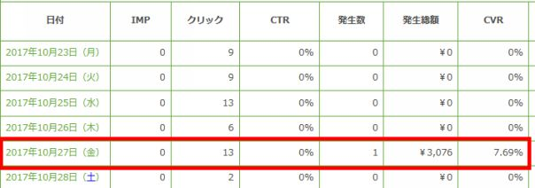
こちらは美容系の案件になります。
広告費は全体で900円くらい使用していましたので、約2,000円の利益になります。
初報酬をゲットできたことは素直に嬉しかったです。
「このまま広告を使いまくって結局売れなかったらどうしよう・・」
という気持ちも正直なところあったわけですけど、開始2週間で1つ結果が出たことはよかったです。
これで自分がやっていることは間違っていないと確信できるようになりました。
おそらくですが、開始15日目で初報酬が発生するアフィリエイトはなかなかないのではと思っています。
私自身、報酬が発生することが何よりのモチベーションになりますので、早い段階で発生するPPCアフィリエイトは自分にぴったりな手法でした。
その代わりといってはなんですが、やはり広告費を使う手法ですので、一度作ったら全くのほったらかしというわけにはいかなくなります。
出稿に対するメンテナンスは必要になります。
しかし、この時点ではまだそんな段階ではなく、今はなるべくLPを作り出稿を繰り返していく・・これが必要な段階でした。
早い段階で、ある程度手が放れても収益が入るようなレベルにまで早く持っていきたいと考えていた時期でした。
・2度目の出稿停止
初報酬が上がった一方で、またyahooの審査に落ちてしまいました。
すでに何十ものLPを出稿していますが、その中の多くのLPを停止されてしまいました。
停止理由を再びyahooに電話して問い合わせてみました。
理由としては、
・アフィリエイトの場合、正式な商品名をフルネームで記載しなければいけない
・医薬部外品のため、サイト内に「美白」という言葉が入っていてはいけない
ということでした。
アフィリの場合、商品名を記載するときは、きちんとフルネームで記載しないといけないことを初めて知りました。
「美白」というフレーズは入れてはいけないというのはガイドラインで確認しました。
これは私のミスですね。
今後同じミスはしないようにしないといけません。
それにしてもなかなか厳しいです・・
聞いてみるとどうやらアフィリエイトに対して、年々厳しくなっているようでした。
アフィリエイトが全く出せなくなるということはないかと思います。
しかしながら、グレーな抜け道を使って出稿している人が多いため、特にアフィリエイト関係の広告は厳しく見られているということを聞きました。
確かに、他のライバルサイトをリサーチしていると、画像にリンクボタンがついているだけのページをよく見かけます。
一昔前はそのようなページでも問題なかったみたいですが、現在は「中身（コンテンツ）のないサイト」と判断され出稿停止になります。
また、煽りの表現が多いサイトも出せなくなっています。
今後はいかに、yahooさんと良いお付き合いをしながら、かつ魅力的なLPを作っていけるかが大事になります。
私自身もなるべく審査落ちしないように、勉強しつつ出稿していくことを考えていきました。
これまではLPを作る時はhtml様式でサイトを作っていました。
簡単に説明しますと、htmlは様々なタグがあってそのタグを用いながらサイトを作成していく形です。
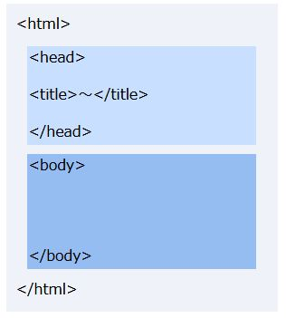
上記の画像のように、<html>タグの中に<head>タグがあったり、<title>タグがあったりでこのタグの集合体がサイトの形として見えるように作られています。
初心者の私には最初のころはなんのこっちゃさっぱりわかりませんでした。
ただ最近では自分でタグを触らなくても、word感覚で作れるようなツールが出てきていますので、私のような素人でも少し慣れればサイトを作れるようになります。
ただやはり自分の場合、1つのサイトを作るのにどうしても時間がかかっていました。
そこで「もうちょっと効率的にLPを作れる方法はないかな」といろいろ探しておりました。
そんなときに「ワードプレス」というものを知りました。
ワードプレスとは簡単に説明しますと、「ブログを簡単に作るためのツール」になります。
ブログといったらアメーバブログなどを想像されるかもしれませんが、それだけでなくLPのような1枚もののページを作ることも可能です。
カスタマイズが豊富に行えるのが、ワードプレスの魅力的な部分の1つです。
またテンプレートも今は豊富にあるので、自分のイメージにあったモノを選ぶこともできます。
自分の作りたいように作ることができる、それがワードプレスの一番の魅力です。
ここだけ聞くといいところだらけですが、もちろんワードプレスを使いこなそうとするには、それなりに学ぶ必要があります。
使い方に幅が広いだけに奥が深いです。
ワードプレスをまだ何も知らない私は、まずはPPCアフィリエイトで使えそうなテンプレートを探しながら、マニュアル通りのやり方で使っていこうと考えました。
慣れたら少しずつ、自分のやりたいようにカスタマイズできればというスタンスでした。
ワードプレスを導入するためにサーバーにアップするのですが、これがレンタルサーバーによっては簡単だったり難しかったり・・
ただ私はエックスサーバーを利用しているのですが、ここはほぼ自動でワードプレスをインストールしてくれるサービスがあります。
これはとても助かりました。
ワードプレスを使うことを考えている人は、エックスサーバーはおすすめですね。
⇒ エックスサーバー
次にワードプレス内で構築を行っていくのですが、「テーマ（テンプレのこと）」のインストールだったり、「プラグイン」の新規追加だったり・・
初めて聞く言葉がたくさんありすぎて少々パニックになりましたが、なんとか作業をこなしていきました。
2時間ほどかかってしまいましたが、ようやくワードプレスでの第1号のLPが完成しました。
構築は大変でしたが、1度ワードプレスの構築を終えてしまうと後のLP作りはスムーズでした。
そこから２，３個続けてLPを作ってみましたが、「なるほど、これはやっぱりhtmlで作るより簡単かも」
と確信を持てました。
これをある程度使えるようになれば、これは大きな武器になってくれるかもとおおきな期待をよせています。
今後のLP作りがちょっと楽しみになった瞬間でした。
・初月（月単位）の発生報酬は6,000円
アフィリを開始して初月（月単位）の発生報酬は6,000円でした。
この出足が良いのか悪いのかこの時はよくわかりませんでした。
ただアフィリエイト業界全体からみると、開始して数か月は報酬が出ないことが当たり前な世界であることを考えると、初月で発生報酬が出たことは喜ぶべきことと感じていました。
正直なところ、自分自身初月から報酬が発生するとは思っていなかったので、嬉しい誤算といったところでした。
使用した広告費も約1,000円くらいなので、5,000円ほどの利益になります。
アフィリエイトの中でもPPCアフィリエイトを選択したことは、やはり間違っていなかったなと改めて思いました。
開始直後はわからない言葉、事柄も多く、いろいろとスムーズに進まないことだらけでした。
まさしく3歩進んで2歩下がるような毎日。
それでも発生報酬が上がるとなによりモチベーションにつながります。
この時点で10万円にはまだ程遠かったですが、利益が上がることを経験できたことは大きな収穫でした。
ただ、ここで今の自分に大きな壁が立ちはだかりつつありました。
それは、「yahooでの広告の掲載停止」です。yahooの審査で3度掲載停止になってしまいました
この数日前も掲載停止になったばかりだったのですが、またもや広告が停止になってしまいまいた・・
さすがにこう何回も掲載停止になると、せっかく報酬があがったモチベーションも削られていく思いでした。
停止の理由はやはりyahooに直接問い合わせてみないとわからないので、電話をして改めて停止理由を聞いてみました。
今回の理由としては、「美白成分」という言葉が抵触範囲の様でした。
この文言を使う際には、「※：メラニンの生成を抑え、日焼けによるしみ、そばかすを防ぐ」
・・という注意書きが必要とのこと。
私は美容系の案件を主に取り扱っておりましたので、上記の「美白成分」という言葉はほとんどのLPの中に入っていました。
そのため、大半の広告が停止されてしまった感じです。
でも、「こんなに厳しく見られるものなの・・？」とちょっと弱気になってしまいました。
他のライバルサイトを見てみてもそんなにきっちり文言を書いていなくても、掲載できているものもたくさんあるのになぜ自分だけ・・
というちょっと性の悪い自分が出てきてしまいました。
・・と、こんなことを思っていてもしょうがない、またここでやめてしまったらこれまでの苦労が水の泡になってしまうので、気を取り直してLPの修正に取り掛かりました。
そして再審査の為出稿を行いました。
でも、今後もまた同じように審査落ちしてしまったら、次に考える必要があると思っています。
化粧品や医薬部外品を出稿しようとすると、これらは薬事法の絡みが出てきます。
yahoo側としてはこのような案件は、厳しめにみられてしまう傾向がどうやらあるようです。
アフィリエイト関連ならなおさらということです。
だとすると、このまま同じジャンルを扱っていては、前に進めなくなってしまう可能性がある。
そのため美容系の案件だけではなくて、次の新しいジャンルを開拓する必要があると考えるようになりました。
これから次のジャンルをどうするか、
新たにリサーチしていこうと考えました。
アフィリ開始から2，3週間経過したあたりでは、案件を探して→LPを作って→出稿を行って・・、という普段やりたい作業よりも、yahooに連絡して→停止理由を聞いて→抵触箇所を訂正して→再申請に出して・・、という本来はしなくていいことに時間を取られてしまっている状況でした。
これだけ何回も落ちてしまうと、さすがにやけを起こしたくなるような気持ちでした。
完全にモチベーションが下がってしまっていました・・
アフィリエイトLPの出稿で一番多いのが、「コンテンツ不足」による掲載停止です。
極端に言いますと、LPに画像だけ貼り付けて、リンクボタンを入れてあるだけのような、内容が何も無いLPに関しては出稿することができません。
一昔前はそれでも出稿できたようなのですが、今はそのようなコンテンツでは出稿できないようになっています。
掲載停止の理由の1つが、その「コンテンツ不足」によるものでした。
しかしながら自分が作っているLPは、ライバルサイトをリサーチしつつ、他の出稿されているLPよりもコンテンツは充実していると思うのですが、それでも「コンテンツ不足」と判断されてしまうようです。
また、他の停止理由では、「医薬部外品」という表記が抜けているということでした。
私はこれまで美容系の案件を多く扱っていますが、その中には「医薬部外品」のものも多くありました。
医薬部外品を扱う時は、アフィリでもLPに「医薬部外品である」という旨の表記が必要なようです。
「そんなこと出稿されている他のライバルサイトでも表記されていたかな・・？」と思ってライバルサイトを見てみると表記されていないサイトもよく見受けられました。
「これって自分のアカウントが何かブラックリスト入りしていないか？」「今後何回やっても審査に引っかかるんじゃないか・・？」
と思うようになりました。
ちょっと目の前が真っ暗になってしまいました。
そこで一度自分の知り合いに自分の状況を相談してみました。
そうしたら、「う～ん、そんなところまで見られて審査落とされているんや・・。それは確かにブラックリストに入ってしまっているかもしれんなあ・・」
「やっぱり・・」とは思ったもののさすがにショックが大きかったです。
ここまでやってきたのに、これからも審査でロクに進むこともできないんだろうかと。
このままPPCアフィリエイトをやっていって本当に大丈夫だろうか・・
と、また弱い自分が出てきてしまいました・・
そんな時、その知人からまた新たなアドバイスをいただきました。
「新たにアカウントを開設しなおしてみたら？」
また新たにアカウントをしなおしたら、審査の見られ方が変わる可能性があるとのこと。
「それと今やっているジャンルは変えた方がええかもね。そのジャンルは自分もやったことあるけど確かに掲載停止が多かった気がするわ」
・・とのこと。
私が主に扱っているのは、美容系の中でも「悩み系」に関する案件。
このジャンルは特に審査に厳しいということでした。
ということはジャンルを変えていけば、また出稿がきちんと行える可能性があるということ。
モチベーションガタ落ちだった自分に一筋の光が見えてきた瞬間でした。
アフィリエイトを始めてまだ1か月足らずですが、そんな中でもモチベーションの波が激しすぎるくらい動いていました。
この時点で何度もくじけそうになっていましたが、なんとか歩き続けていこうともがいていた時期でした。
私は上記でもご紹介した「琉球の酒場」というサイトに登録しているのですが、その中に「琉球の酒場 Premium」という有料サービスがあります。
⇒「 琉球の酒場プレミアム 」
私はその有料サービスに参加しているのですが、ここでは定期的にASPさんと合同で行われるセミナーを開催しており、この時そのセミナーに初めて参加しました。
参加を決意した意義は自分の中で3つほどありました。
・今の自分のモチベーション、気持ちを新たにする
・同じPPCアフィリエイトをやっている人と会う
・特別単価をもらう
１．今の自分のモチベーション、気持ちを新たにするため
この時はyahooの審査落ちが著しくなかなか出稿すらできない状態でした。
そのためモチベーションが上がらない日々が続いていました。
そんな状況を何とか打開すべく行動に移したことが、「セミナーに参加する」でした。
例えば自己啓発本を読んだ時って、何となく「よし頑張ろう！」って思えることありませんでしたか？
セミナーに行けばそのような感覚になれるのではないだろうかと考え、参加したのが1つの理由でした。
ただ基本的に私は人見知りが激しい方で、あまりそのようなセミナーとか参加する方ではありませんでした。
私の場合はだいたいセミナー動画を見て済ますことがほとんどでした。
ただ、「やっぱりセミナーの雰囲気を生で味わった方が感じ方も違うはず」という思いがあったことも事実でした。
そのため、今回を機に参加することにしました。
２．同じPPCアフィリエイトをやっている人と会うため
こちらは「できれば・・」という程度の思いでした。
なぜなら先ほどもお伝えしたように、自分はすごく人見知りが激しい方で、自分から話しかけるということがすごく苦手な性分です。
なので、そういう場に参加してもセミナー終了後は誰とも話さず、その場を逃げるように去っていくことがほとんどでした。
ただ今回は何となく、「多分無理だろうけどもし同じような状況の人と話ができればいいな」くらいの感じを考えていました。
３．特別単価をもらうため
これは、このサイト独自のサービスでもあるのですが、「琉球の酒場 Premium」は、いろんなASPさんと協力されており、会員の人に特別単価の提供を行っております。
これだけでもすごくありがたいサービスなのですが、セミナーに行くとさらに売れ筋案件の紹介などがあるので、前からぜひ1度セミナーに参加してみたいと考えていました。
特にPPCアフィリエイトは広告費を使って集客していく方法ですので、報酬単価が変わると戦術も大きく変わってきます。
また、最近ではASPさんの方でも、アド広告出稿者に対する報酬に力を入れています。
簡単に言うと、「アド広告を使って売り上げをあげている人により報酬単価を上げる」という流れが出てきています。
その流れの第一歩を作ったのが、この「琉球の酒場 Premium」というサービスかもしれません。
以上を理由にセミナーに参加してきました。
内容はとても濃かったです。
売れ筋案件の紹介を行いながら、その商品をどのように売っていくかの説明。
訴求ポイントやターゲットなどを教えてもらい、どのように見せたらいいのかなど細かにお伝えされていました。
自分だけでやっている時はこんなことは考えることもなかった内容で、これは本当によかったです。
そして特別単価を出してくれる案件も教えていただき、さっそく特単の申請をしました。
ただ私的に一番よかったのは、望んでいた「PPCアフィリエイトで同じ状況にいる人」に会えたことでした。
おそらく普通にセミナーを受けていただけでは、誰とも話さず帰ってしまっていたかもしれません。
しかし、このセミナーでは始める前に、まずは隣の席の人と挨拶を交わして自己紹介をする時間を設けていました。
そのため、隣の人と話すことができました。
緊張しつつ自己紹介を行っていると、「自分もPPCアフィリエイトを始めたばかりなんですよ～」「まだまだわからないところがたくさんありますよね。」
などと共感する部分が多く、いつの間にか話し込んでいました。
これは嬉しかったです。
自分と同じ気持ちの人がいるって、なんだか心強い感じになったりしませんか？
まさにそんな感じを味わえました。
3人掛けのテーブルで私を含め3人で、休憩中はずっと皆さんと話していたことを覚えています。
そしてセミナー終了後には、「今度3人で飲みながらお話でもしましょう」という感じになり終了しました。
セミナーに参加して、セミナー内容より大事なものを手に入れた感じがしました。
近々3人で飲みに行く約束も取り付けました。
ただふと我に返った時に、この時の自分の状態は審査落ちして出稿もロクにできていない状態です。
このままではいけないと思い、早く次の行動を起こさなければ・・と、再度奮起を促して頑張っていこうと誓いました。
さて、気を取り直してPPCアフィリエイトの取り組みを再開しました。
この日までにモチベーションを取り戻すためにいろいろと経験しました。
・知り合いの話
・セミナーの参加
・同じ状況の方と出会えたこと
・・など、今まで出なかった場所に出てみたり、出会ったことのない人に出会ったりして新しい価値観を吸収することができました。
他の人も一筋縄でうまくいったことはなく、一度は挫折を経験していることも知りました。
そんな中で、自分もようやくスタートラインに戻ってこれた感じでした。
ちなみにですが、あまり作業ははかどっていなかったのですが、そんな中でも売り上げは10,000円ほど上がっていました。
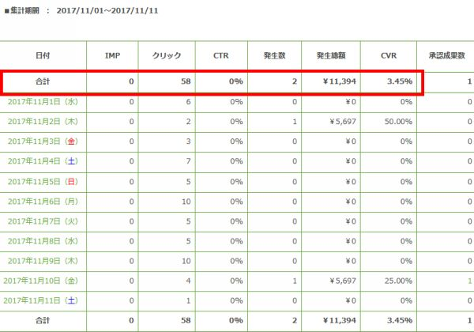
審査で大半の広告は掲載停止になっていたのですが、そんな中で出稿を続けてくれていた広告がありました。
何もせずに売れてくれたことに関しては衝撃でした。
「これってきちんとすればものすごいものになるのかも」
と、こんなところでもモチベーションが復活するきっかけを与えてくれました。
私はPPCアフィリエイト再開にあたり次のことを行いました。
・新規アカウントで再開させる
・別ドメインに変えてワードプレスを再構築させる
・新たなジャンルに案件を変えて出稿する
１．新規アカウントで再開させる
既存のyahooアカウントでは出稿するたびに審査で落とされた背景がありました。
何人かの方に相談してみた時に、「それだけ審査で落とされてしまっているのなら、新たにアカウントを作り直して出稿した方がいいかも・・」
というアドバイスをいただきました。
おそらく審査に何回も落ちていたので、審査に対して厳しく見られるアカウントになってしまったと考えられます。
そのためもう一度始めるためには新たにアカウントを作り直してそちらで出稿を行っていくことにしました。
２．別ドメインに変えてワードプレスを再構築
これは私が勝手に推測したことですが、今まで出稿していた同じドメインでまた出稿してしまったら、もしかして既存のアカウントと関連づけられてしまい、また審査が厳しくなってしまうのではと考えたからです。
まあこれは根拠のないことで、私の勝手な推測になります。
３．新たなジャンルに案件を変えて出稿する
それまでのアカウントでは、薬事法にあたるようなもともと審査に厳しめなジャンルを扱ってしまったのも1つの原因だったかなと考えています。
その影響ですべての案件で厳しく見られてしまった背景があるかなと思っています。
そのため、まずは審査を通りやすくして、自動審査になりやすいアカウントにしてから徐々にジャンルを増やしていきたいと考えました。
・・と以上のことを行い出稿していきました。
この辺りから、ジャンルとしてはサプリ系の案件を扱っていくことにしています。
サプリ系の案件も審査的にみられやすいジャンルではありますが、報酬単価的に高めのものが多かったのでこのジャンルを始めることにしました。
特にLP作りの部分で記載していくのは、
・価格について
・特典について
など効果効能に関係する記載はせず、とにかく審査に引っかからないように心がけました。
この出稿申請が無事に通れば新たに道が開けてくるかなと考えていました。
そうこうしているうちに、あっという間にPPCアフィリエイトを開始して丸1か月が経過しました。
ここまで技術云々よりも、モチベーションがジェットコースターのように上がり下がりしたことが何より大変でした。
私からするとアフィリエイトというのは、もともと「必ずしもしなければならないもの」という位置づけではありませんでした。
一般的には仕事なら「生活していくためにやっていかなくてはならないもの」ですし、趣味でしたら、「好きなので自然に続けていけるもの」ですが、どちらにしても継続していけるものです。
好きか嫌いかは別としまして・・。
ただ、「必ずしもしなければならないもの」ではない場合、ネガティブな物事や感情が起きると、どうしても「今日はやる気が出ないなあ・・」という状態が発生します。
私自身たったの1か月ですが、どれだけ挫折しかかったことでしょうか・・
特に私にとっては「yahoo審査」というのが鬼門でした。
はまってしまうとなかなか抜け出せない蟻地獄のような感覚に陥っていました。
でもここで周りの存在が大きかったです。
セミナーに出てみたり、参加している人の話を聞いたり、同じような立場の人でどのような考えを持っているか聞いたり・・。
そうしているうちに「よし、また頑張ろう」という気持ちがわいてきます。
いろんなきっかけがあってここまで続けてこられました。
開始1か月で目に見える成果としては、
売上金額：23,000円
広告費： 5,000円
という状況でした。
自分の中では全然できていないと思っていましたが、こうやって数字を改めて見ると、「これだけの成果は出ているんだ」と実感しました。
ここまで続いていなかったら、もちろんこのような結果は出ていなかったわけです。
もがきながらも一歩ずつ前に進んでこれたことは、決して間違いじゃなかったと感じました。
モチベーションを維持するのはなかなか大変です。
自分が意図しないところで下がっていくことは往々にしてあります。
そんなときに複数のモチベーションの元があると、一気に下がることはないのかなと思っています。
自分のモチベーションとしては、
・実践記ブログ
・アフィリエイトによる売上
・セミナーに参加する
・セミナーで出会った似たような状況の人
・アフィリエイトで成功している憧れ（目標）の人
・・といったあたりです。
PPCアフィリエイトでは特に、何か案件が１つ当たると爆発的にそれが伸びるというのを聞きます。
実際に1つの案件だけで何百万と稼ぐ人はザラにいます。
自分もそのような案件に出会えるように、案件探しを続けていこうと奮起していました。
[比較サイトを作って出稿]
これまでは商品名キーワードで出稿できる案件に絞って出稿をしていました。
しかし、これだとどうしても商品名で出せる案件が限られてしまいます。
そこで新たに「比較サイト」を作って出稿してみようと考えました。
比較サイトとは、同じジャンルの商品を複数載せてランキング形式などにして掲載していく方法です。
例えば化粧品のジャンルであれば同じ化粧品の商品を複数載せて、それぞれの特徴を掲載していくような流れです。
この比較サイトを作っていくことができれば商品名だけのキーワードではなく、例えば「化粧品」を使ったキーワードや、「クレンジング」「ファンデーション」など幅広いキーワードを使っていくことが可能になってきます。
出稿の仕方にも幅が出てきますし、この方法でLPを作成して出稿していこうと考えました。
・案件探し
まず、どのようなジャンルで出していこうかと考えましたが、今回はサプリメント系の商材でやっていこうと決めました。
理由としては、特別単価がもらえると案件が多かったのと、今でも安定して販売されていることからこのジャンルに決めました。
そしてサプリメント系の案件を10件ほどピックアップしていきました。
・各案件の特徴を抜き出す
ピックアップした全ての案件を比較サイトに盛り込むわけではなく、これらの中からより魅力的な案件を選定して掲載していきます。
そのために私は各案件の特徴を項目ごとに抜き出すことにしました。
・販売価格
・内容量
・顧客満足度
・リピート率
・配合成分
・メディアなどの掲載実績
・安全性
・返金保証
・特典（限定プレゼント）
・・などの項目をエクセルに落とし込み、それぞれの項目を埋めていくような感じでデータを作っていきました。
これは、各販売ページを上から下まで見ていくと、ある程度の情報を拾うことができます。
この作業自体は出稿に直結することではないので、一見するとすごく回りくどいことをやっているようにも思えます。
ただこれができると各商品の強み、弱みがわかりやすくなるので、そのあとの比較サイトが作りやすくなりました。
比較サイトをつくる時には、面倒ですが一度エクセルで各項目を洗い出すことはおすすめですね。
・案件を選定してLPを作成する
今回は10件ほどあった候補から、5件を選んでその案件を順番に作成していきました。
あらかじめエクセルで各特徴が抜き出せているので、LP作りはそれほど苦労せずに作ることができました。
・キーワードの選定
キーワードに関しては、関連キーワードを使って出稿していくことにしました。
関連キーワードとは、例えば「サプリメント」と検索をしたときに、検索結果画面の最上部と最下部に表示されるキーワードがあります。
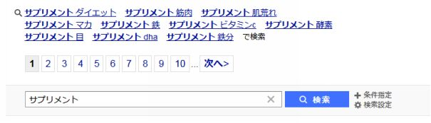
サプリメント ダイエット
サプリメント 筋肉
サプリメント 肌荒れ
・・
などのキーワードが出ていますが、これが「サプリメント」の関連キーワードになります。
これらの関連キーワードは、ある程度実際に検索されているキーワードになるので、出稿候補としては非常に参考になります。
ただし、ここだけではキーワード数としては少ないので、私はyahooプロモーション広告で提供されている「キーワードアドバイスツール」というものを利用することにしました。
このツールを使って、「サプリメント」に関連するキーワードを抽出して出稿していくことにしました。
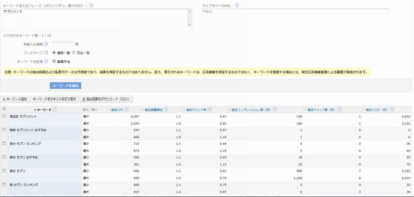
今までの作成手順に比べて何かと手間が増えたので結構大変でしたが、これで当たるキーワードと案件が探せれば、一気に売り上げを増やすことができます。
とういうことで、ここから更なる売り上げを狙って対策していきました。
先にお話ししたPPCアフィリエイトセミナーで出会った人たちと、情報交換の意味も含めて飲み会に行ってきました。
セミナーで出会った2名の方々と私の3人です。
そのセミナーでは、内容ももちろん参考になったのですが、それ以上に「PPCアフィリエイトをしていて近い状況にいる人」に会えたことが何より嬉しいことでした。
自分に近い状況の人が近くにいると自分のモチベーションもアップしてきます。
「よし、自分も頑張るぞ！」という気持ちを呼び起こしてくれます。
自分はこの頃まだ始めて1か月ほどでしたが、どんな情報交換ができるか楽しみにしながら伺いました。
皆さんが席について乾杯しながら、お二方の現在のビジネスやこれまでのことなどを伺っていきます。
まず1人目の方ですが、本業はコピーライターを個人でやられている方でした。
その傍ら転売もしているとのこと。
転売ですでに稼がれていたこともあり、「アフィリエイトでも稼げないわけがない」という気持があり、PPCアフィリエイトを始めたということでした。
ただ、きちんと利益が出るまでには半年かかったということでした。
今年の3月くらいに始めて、半年かけてようやく利益が出始めた。
今はPPCアフィリエイトで30万円ほど利益を上げているということでした。
一時期は「きちんと利益が出るんだろうか・・」と悩んだ時期はあったそうですが、途中で諦めず継続を通した結果、今があるということです。
そして二人目の方。
現在はSEOをメインにしたアフィリエイトを行っていました。
2年前ほどからSEOアフィリを始めて、現在は月に200～300万円ほど稼いでいるようです。
・・ビビりました。
1人では限界があるようなので、数人雇って今も拡大中とのことでした。
ただはじめから上手くいっていたわけではなく、この方も結果が出るまでに半年ほどかかっていたようです。
独立してから半年ほど経っても全く結果が出ず、資金が底を尽きかける寸前までいったみたいですが、起死回生で売上が伸びていったようです。
そして今は拡大の1つの手段として、PPCアフィリエイトを始めたところということでした。
みなさんセミナーでお会いした時は、「PPCアフィリエイトで近しい状況の人」と感じていたのですが、改めて話を聞いてみるとすごい方たちでした。
自分よりも断然先を歩いている方たちでした。
ただお二人とも口を揃えておっしゃっていたことが、「最初は結果が出なかったが続けていたから結果が出せるようになった」ということでした。
アフィリエイトを始める9割の人は続かないから結果が出ない。
続けていれば必ず何かしらの結果が表れ始める。
それをモノにできるかどうかが自分次第・・
これは実際に継続されて結果を出している人の言葉ですから、非常に説得力がありました。
たった1か月くらいで諦めかけていた自分が恥ずかしかったです。
この場では自分はどちらかというと情報をいただくばかりの立場だったので、なんだか申し訳ない気持ちもありつつ・・という感じでした。
最後に、「またこれからPPCアフィリエイトで結果を出してまた集まりましょう！」という形で終了しました。
これで改めて強烈なモチベーションができました。
これだけいろいろ教えてもらって結果を出さないわけにはいかない。
必ず結果を出してまた会えるようにしよう！
そして自分も皆さんに情報を提供できるようになろう！
という新たな決意が生まれ、本当に有意義な飲み会になりました。
飲み会の後、これまでを挽回すべくアフィリに邁進していました。
出稿の方もyahooの審査に遮られることなく、順調に出稿ができておりました。
売上も少しずつですが上がってきていました。
この時点（2017年11月25日時点）の11月売上としては、
売上： 約30,000円。
広告費：約10,000円。
ぽつぽつと売上が上がってきてはいたのですが、ここ数日は売上がパッタリ止まっていました。
「あれっ、何かがおかしいのかな・・？」と思い、いろいろと確認してみることにしました。
・アクセス解析
ワードプレスを使用するようになってから、アクセス解析を入れるようにしていました。
ワードプレスにはプラグインという運用するのに補助的に使えるツールがたくさんあるのですが、その中の1つにアクセス解析があります。
このプラグインを導入してからアクセスを確認するようにしていました。
アクセス解析を確認する限りでは、特に異常な箇所は見当たりませんでした。
・yahooの出稿状況の確認
次にyahooの出稿状況を確認してみました。
広告が審査に落ちておらず出稿できているか？
キーワードの掲載順位など変化はないか？
広告費の不足に陥っていないか？
などを確認してみましたがこちらも特に異状ありませんでした。
・ドメイン、レンタルサーバーの確認
次にドメイン、レンタルサーバーの確認を行いました。
たまにですがレンタルサーバーなどで通信が不能になる場合があるということを聞いたことがありました。
ドメインも知らないうちに自分でサイトを非表示にしていたりすることがあるので、そこも含めて確認してみました。
どちらも問題なく動いておりました。
・・どこを調べても特に問題がなかったんです。
たまたま売り上げが上がっていないだけで、特に異常のある箇所はないのかな・・
と思いながら何気なく自分が作ったLP内のアフィリリンクをクリックしてみたら・・
なんと、マウスポイントがぐるぐる・・、となったまま販売ページに飛ばない状況が発覚しました。
「原因はこれだったのか！！」と思い、この状況を急いでASPさんに問い合わせてみました。
すると「アフィリリンクがとばない現象はちょいちょい起こることがある」ということでした。
「えっ、こんな大事なことがちょくちょく起こるの！？」とちょっとビックでした。
自分としては広告費を使ってアクセスをよんでいるので、それでアフィリリンクが無効になるのは大打撃です・・
でもこの経験を受けて、「ASPを固定させるのは結構危険なのかも」と思うようになりました。
今後は、同じ案件でも別のASPでも確認しておくことにし、何かあった時には保険としてすぐに対応できるようにする必要があると感じました。
2017年11月は、私にとって特に激動の月でした。
・yahooに何回出稿審査を出しても審査に落ちる
・売上を上げるどころか出稿すらできない状態
・何度も挫折しかける
・そんな時にPPCアフィリエイトセミナーに参加
・そこで出会った人たち
・モチベーション新たにyahooアカウント取り直し
・新たなジャンルで出稿を再開
・比較サイトを使いキーワードを広く出稿
・少しずつ売上につながっていく。
・アフィリリンクが販売ページに飛ばない事態
・・とざっと書き出してみただけでもいろんなことがありました。
何度挫折しかけたかわかりませんが、でも続けてこれたおかげでようやく芽が出始めてきていました。
2017年11月の売上は、
発生金額：63,238円
広告費： 21,937円
利益： 41,301円
と少しずつ利益が出るようになってきて、これまでの努力が少しずつ報われてきているように感じていました。
全くの初心者でPPCアフィリエイトを始めた私が、不安だらけの中で動いてきましたが、ここまでこられるようになり嬉しいのと同時に何かホッとしていました。
もちろん10万円まではまだ遠いのですが、希望の光が見えてきたことは大きなことでした。
アフィリエイトを行っていくためにスキルやノウハウはもちろん大事ですが、それ以上に「何があっても継続していく」こそが結果につなげられる唯一の方法かなと思っています。
頭がいい人やセンスの塊のような人は、初月で10万、3か月で50万とか稼ぐような人はたくさんいます。
しかしながら、自分はとてもそのようなセンスの持ち主ではありません。
少しずつでしか前に進むことができませんが、自分なりに試行錯誤しながら前に進んできた結果、何とかここまで来ることができました。
「アフィリで稼げない人の9割はすぐに実践をやめてしまうので結果が出ない・・」これは明言だと思います。
ここまで私は何度も挫けそうになりましたが、ある意味自分はこの1か月で止める原因となりそうな経験を一通りさせてもらったと考えれば、あとは売上をあげていくだけと考えることもできました。
とは言いつつも、ここからまた審査にはまる日々が続くのでした・・。
引き続きコツコツと案件を出稿していましたが、そんな折にまたもや審査落ちする案件が出てしまいました。
こればっかりはどうしようもないのですが、本当に勘弁してほしい気持ちでいっぱいでした。
改めて、yahooに連絡して抵触箇所を問い合わせてみました。
理由を聞いてみると、私自身が作ったLP内は特に問題ないということ。
「えっ！？それで何で審査落ちするの？？」と思い、さらに詳しく聞いてみると、「LPからボタンをクリックした先のページに抵触箇所があります・・」とのこと。
この案件はサプリメント案件なのですが、実際に抵触箇所を聞いてみるとありました。
「○○日でダイエット効果・・」という文言が・・。
これは効果効能をうたう文言にあたり規約で禁止されています。
この部分で審査に落ちてしまったということなんですが何よりも驚いたのが、「自分が作ったLPだけでなく、アフィリリンクページ（販売ページ）も審査対象になり得る」ということでした。
どうやらアフィリエイトサイトと見なされた時は、その先のページも同時に審査されるようです。
その際に販売ページに抵触箇所があれば、そこでアウトということになってしまうということでした。
yahoo側が言っていることはわかるのですが、でもこれってイチアフィリエイターにとってはどうしようもないことですよね。
販売ページは広告主の範囲であって、こちら側ではどうすることもできない・・
と、諦めかけていました。
そんな時にですが、私が入っている会員サービスの「 琉球の酒場プレミアム 」。
こちらでは案件にもよりますが、こちらから広告主にLP改善の要求ができる仕組みがあるということを知りました。
「何と、これは頼もしい！」
と思い、さっそく「琉球の酒場 Premium」の管理画面から該当案件を探し出し、LPの改善要求を行いました。
2日後くらい経過しましたが、結果的に広告主さんにきちんと抵触箇所を修正していただき、無事に出稿することができました。
「琉球の酒場 Premium」では特別単価がもらえるところが魅力で会員になりましたが、こんなところでもお世話になるとは嬉しい誤算でした。
やはりASPと強いつながりのある企業が行っているサービスは良いです。
アフィリエイトする側の意向を汲んでくれるサービスはこちら側としてはとてもありがたい存在です。
今回で１つ新たな審査落ちを経験しましたが、それを乗り越えてまた１つ成長できました。
タイトルにもありますように、まだ実績も何もない私にASPさんの担当者がついてくれることになりました。
今思えば本当に運が良かったのだと思います。
もともとなのですが、アフィリエイトを始めてまだ間もないころに、私は「mobee」というASPに登録していました。
⇒ 「 mobee 」
このASPはメジャーというわけではなかったのですが、当初ネットでASPのリサーチを行っていた時に見つけて何となく登録していたASPでした。
ただ、実際のところmobeeでこれまで案件をアフィリしたことはありませんでした。
要するにここでは全くの無報酬のままだったわけです。
そんな状態だったのですがある日、「担当者が交代しましたのでご連絡させていただきました。これからどうぞよろしくお願いいたします。」という旨のメールをいただいたことがきっかけでした。
まずそもそも「自分に担当者ってついていたんだ・・？」という思いが初めにありました。
せっかくいただいたメールだったので、何気なしに「こちらこそよろしくお願いします。」
という返信を送りました。
すると間もなくして、「早速ですが、是非一度お打ち合わせを願いたいのですが、近々でご都合がいい日はありますでしょうか。」
という連絡が来ました。
「担当者ってある程度実績がある人にだけつくものなんじゃないの？？」という考えがあったのでビックリしました。
全くの無報酬の自分にも担当者がついてくれて、先方から会いたいという連絡をいただきました。
これはぜひ1度お会いしたいと思い、速攻で返事しました。
その数日後、mobeeの本社にお伺いしまして、打ち合わせをすることになりました。
あらかじめ、リスティング広告を使ってアフィリエイトを行っているということを伝えていたので、リスティング可能な案件をいくつかご用意してくださっていました。
なのでどの案件もリスティング可のものばかりで、さらにまだ自分が出稿したことのない案件ばかりでした。
「これは非常にありがたい！」という感謝でいっぱいでした。
何気なく返信した1通からこのように担当者と出会えるようになるのでわからないものです。
ここからは、少しmobeeの案件にも力を入れて、
出稿していこうかと考えていた頃でした。
2017年10月から開始したPPCアフィリエイト。
2か月とちょっとかかりましたが、ようやく累計の発生報酬額が10万円を突破します。
当時（2017年12月13日時点）のここまでの成果がこんな感じでした。
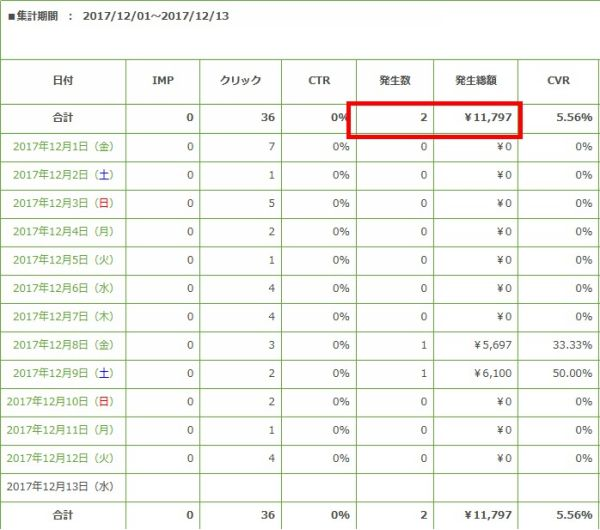
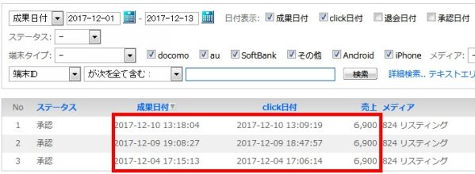
プラスして他のASPで4,768円の報酬がありました。
10月の売上額：6,000円
11月の売上額：63,238円
12月（～13日まで）の売上額:37,265円
合計して10万円を突破しました。
実際にはこれまで広告費を使っていますので（全体で約30,000円くらい）、利益としてはまだ70,000円ほどになります。
それでもネットビジネスを始めるようになって、いろんな壁にぶち当たって何回やめようかと思いましたが、なんとか続けてこれて良かったです。
やっぱりここまで来て思うのは、「稼げる才能があるかどうか」というものは全然関係ないのかなと思います。
改めて思うことは、ここまでこれた秘訣は「続けてこれたかどうか」に他ならないと思っています。
私自身、何回もありました。
yahooの審査に落ちてモチベーションが下がることが一番多かったですが、決してそれだけではありませんでした。
例えばどこかのタイミングで飲み会が入ってしまうと、「今日はもう面倒くさいから明日やろう・・」と思ったこともありました。
また、本業がうまくいかないことを理由に「今日はやる気が起こらないから次に回そう・・」というような言い訳を自分によくしていました。
これが積み重なるとついに完全に手が止まってしまうわけです。
私は何をやっても続かない「3日坊主」の申し子のような存在でしたが、アフィリエイトに関してはこの1歩手前で自分は何とか食い止めることができていました。
それは、継続するための縛り（環境）を自分なりに設定していたことが大きかったかもしれません。
まずはやはり こちらのブログ の存在は大きかったです。
このブログは皆さんにノウハウをお伝えしようという、そのような大層なものとは大きく異なります。
自分が続けられるように書いているに過ぎないブログでした。
それでも「これで止めたら宣言したことがウソになる」と思い続けてこられている経緯があります。
次に似た状況の人が近くにいることも大きいです。
先にも登場してきました、アフィリのセミナーで自分と状況が近しい人と会うことができました。
まだPPCアフィリエイトを始めて間もない人たちです。
そのような方たちと出会うことができて、「自分も頑張るぞ」と刺激しあえる仲間ができました。
その部分も大きかったです。
それ以外にも自分のモチベーションを継続するために、色々自分なりに工夫してきたのが大きかったかなと思っています。
といってもこの時点ではまだ累計報酬で10万円を突破しただけで、自分が当初掲げていた単月で10万円突破はまだ達成していません。
ここから単月10万円に向けてのスパートが始まります。
私は「琉球の酒場 premium」というサービスに入っていますが、その企画を行っている琉球スタイルさんがこのほど新しい教材を販売されたということで、さっそく購入して一通り読んでみました。
教材の内容としては、Gmailの取得から説明してあるような、本当に初心者の人でも始められるような内容から始まり、実践中の中級者でも参考になるようなことばかりの内容でした。
まだPPCアフィリエイトを開始して間もないので、まだまだ知らないことばかりがたくさんありました。
私がこれまで一番苦戦しているのは、ほかならぬ「yahooの審査に落ちる」ということですが、そのことを案件選びの項目で詳しく書かれていました。
「なるほど、確かに自分の案件は落ちやすいんだな・・」と、納得できる部分が多々ありました。
これはすでに自分が経験していることなので、特に納得できる部分でした。
やはり、経験しているとすっと入ってくる内容が少しずつですが多くなってきます。
案件選びから広告出稿して、メンテナンスまで網羅されている内容ですが、その中でも特に参考になったのが、
・案件選び
・キーワード選定
この２つです。
これまで私の案件選びは、主に「商標名キーワードOKの案件」がメインでした。
ただ、こればっかりでは頭打ちになるので、それ以外の案件も出稿してはいるのですが、いまいち反応がよくない状況が続いていました。
しかしながら、この案件選びのおかげで、たくさんのヒントを得ることができました。
この項目を見ると、「自分は売れなさそうな案件ばかり選んでいたんだな・・」ということが痛いほど思い知らされます。
次にキーワード選定ですが、何よりキーワードを活用するために必要なことは「ターゲットを明確にする」ということでした。
その案件を買う人は、
・男女どちらか？
・職業はどのような人たちか？
・年齢は何歳くらいの人か？
・地域はどこに住んでいる人か？
・また趣味はどのような人たちが多いか？
・・など細かくターゲティングを絞り込むことによって、見えてくるキーワードがあるということでした。
PPCアフィリエイトをやってきて、こんな発想を恥ずかしながらしたことがありませんでした。
PPCアフィリエイトで売上を上げている人たちは、このような考えでやっているんだと改めて考えさせられました。
教材を買って良いことは、自分の無知さを知ることができるということが大きいですね。
この得た知識を、「知った」だけで終わらせるのはもったいなすぎるので、さっそくこの知識を実践に使っていこうと心に決めました。
2017年11月後半か12月にかけて、売れるようになってくれた案件がありました。
脱毛系の案件でした。
脱毛系案件というのは、どちらかというと夏の時期にかけて売れてくるような案件なのです。
しかしながら、この案件は冬でも結構売れている案件ということをASPの担当の方に伺っておりました。
そこで、今の時期でも売れるかなと思い出稿したのですが、思いのほか売れるようになってきてありがたいと思っていました。
「この調子で売れてくれれば12月までに月10万行けるぞ！」と、意気込んでいたのですが・・。
広告主さんからASPを通してのいきなりの連絡。
「○○の案件は配信停止になります・・」という旨のメールをいただくことになります。
自分の心境としては、「えーっ、そんなこれから売れてくると思ったのに・・泣」
これを受けてASPの担当者さんに一度問い合わせてみました。
というのも、もしかしたら私の方で何か規約に違反するようなことを行っていたかもしれない。
例えば商標名キーワード禁止の案件なのに、商標名で広告が表示されていたとか。
芸能人の画像を許可なくLPに掲載していたとか。
思い当たる節は特になかったのですが、もしあったら修正して出稿できる可能性があるかもしれない・・、そのような思いがあり連絡してみました。
しかしながら、ただ単純に広告主さんの都合でプロモーションが終了するということでした。
聞くと、アフィリエイトで商品がどんどん売れてくると、広告主さんはアフィリエイト戦略をやめて、独自の販売ルートのみで行っていくことがよくあるということでした。
ということは、今後もアフィリエイトで売れる案件に出会ったとしても、配信終了になってしまうケースが出てくることがあるということです。
何とも悲しいですね・・
でもこれはアフィリエイトを続けていく限り、宿命なのかもしれません。
また気を取り直して次の売れ筋案件を探しながら出稿を続けていくことになります。
2017年12月にも下旬に入り、月10万円の道が少しずつ見えてきていました。
配信終了になってしまった案件がありましたが、その案件以外にも売れている案件はいくつかありました。
その中の1つで、商標名キーワードOKの案件で一番売り上げを伸ばしてくれているものがあります。
全体の売上の3割くらいを担ってくれている案件です。
やはり売上が伸びる時というのは、売れ筋案件に出会った時に一気にいくもんだと実感しました。
これまで、この案件は商標名のみ出していましたが、「何とかしてこの案件をさらに売上を伸ばしていきたい・・」と考えていました。
そこで先にも紹介した、 SS マスターガイド - PPC アフィリエイト ですが、このマニュアルのキーワード項目のところを何回も読んでみました。
このマニュアルにはキーワードに関しても、たくさんのアイデアの元となる情報が盛り込んであります。
その中でいくつかのキーワードを試していこうと考えました。
１．ライバル商標名で出す
あるサプリ案件になるのですが、同じジャンルのサプリ案件でも複数のサプリ商品があると思います。
そのライバルの商標名を使ってしまおうという作戦です。
案件で「商標名キーワードNG」というのはたくさんありますが、その商標名を使って別の案件を出すのは別にアウトではありません。
似ている商標名に出すことによって関連性が高いと思われるので、うまくいけば売れてくれるかもしれないと考えました。
２．人名を使う
その商品に起用されている芸能人がいれば、その人名は強力だと思います。
ただそれだと人数に限りがあります。
私が考えたのはその案件に関連するであろう人物です。
例えばゴルフクラブを売りたいと考えた時、その商品に起用されている人物キーワードはもちろんですが、「クラブに興味のある人はいろんなプロゴルファーも検索したりするのかな・・」ということを考えました。
とすると、プロゴルファーのいろんな方の名前もキーワード候補に入るということです。
この場合、キーワード単価としてはあまり高くはないと考えられるので、１つ出稿してみる価値はあるのかなと考えたわけです。
３．販売ページに記載されているキーワードを抜き出す
一番抜き出しやすい箇所は商品に含まれている成分とかですかね。
ここを抜き出すだけで、10個くらいはキーワードができてしまいます。
成分からキーワードを検索してきて商品にたどり着く人もいるかと考えました。
別なところでは「お客様の声」の中でも結構掘り出しキーワードがあったりします。
そこで使われている言葉というのは、その人たちの間では常識の言葉となっていることもあるので、そのキーワードで検索する人も考えられます。
いくつかキーワード群を考えてみましたが、実際、上記のキーワードで売れるかは出してみないとわからないものです。
当たりのキーワードに出会うためいろいろ試していくことにしました。
12月も終盤にかかったある日、知らない電話番号からの連絡がありました。
ちなみに、私は普段知らない番号からかかってきてもほとんど電話に出ません。
十中八九、営業とかいかがわしい電話ばかりなので。
ただ、その番号から３回続けて電話があったので、さすがに何だろうと思い電話に出ました。
それはASPからの電話でした。
ASP担当者
「○○さんでしょうか？現在、○○という案件を商標名を使って出稿されていますよね？」
「この案件は商標名NGの案件になり、規約違反ということで、案件の定型解除と売上の取消をさせていただきます・・」
私
「えーーーーーー！！！」
本当にこれくらいの声をあげてしまいました。
この時はあまりにもショックで頭が動かず、そこでいったん電話を切った次第でした。
というのもこの案件は、先ほど紹介した一番売れていた案件でしたので、その思いもひとしおでした。
「この売り上げがなくなったら、今月10万円行くのは難しいだろうな・・」
この月はこの案件での売り上げが大きく占めていましたので、それがなくなるのかと落胆していました。
ただ、それから冷静になり、よくよく考えなおしてみました。
「そもそもこの案件は商標名OKだったはず」と。
自分はこれまで案件を選ぶとき、各案件の詳細を見てリスティングの出稿条件は全て目を通していたつもりでした。
その案件は、確かに「商標名OK」でした。・・というより正確にいいますと、「商標名NG」とは書いていない案件でした。
NGとは書いていないので、OKと理解することは当然のことではないかと。
そう考えた時に、だんだんと理不尽さが増してきて「このまま引き下がってしまったらこちらが悪い一方で終わってしまう」と思い、こちらからASPに電話をかけなおしました。
そして、
・商標名NGとは表記されていなかった
・売上取消や定型解除になることに納得いかない
これらを話しました。
この後、ASPさんから広告主さんに相談したようで、それからまた電話がありました。
ASP担当者
「商標名NGと書いていないのはこちらの不手際でした。よって、これまでの売上は継続させていただきます。」
「提携解除に関しても、今後商標名以外のキーワードであれば引き続き出稿することができます。」
という回答をいただきました。
半分諦めのダメ元で電話した内容でしたが、とりあえずこれまでの売上は継続できてホッとしました。
逆にこのまま黙って、その決定を受け入れていたらと思うとゾっとします・・
アフィリエイトをやっていると、本当にいろんなことが起こりますね。
（ビジネス何でもそうなんだと思いますけど）
ただ、特にアフィリエイトはASPさんと広告主さんを味方につけるか敵に回すかで、結果も大きく変わってくるように思います。
今回はASPさんにいろいろと主張してしまいましたが、今後はなるべくASPさんと仲良くなれるように、
もっと売上を上げていければと思いました。
・・と、この問題は解決しましたが、稼ぎ頭を失い、12月で月10万円突破の道に暗雲が立ち込めてきていました。
しかしながら、何とか達成しようとがむしゃらに案件を出稿していました。
そして・・。
PPCアフィリエイトを開始して79日（2017年12月31日）、ついに目標としていた月10万円を達成することができました。
・報酬金額
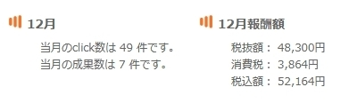
これはfamというASPでの報酬額です。
こちらでは52,164円。
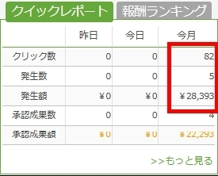
次はアイモバイルでの報酬画面。
こちらは28,393円。
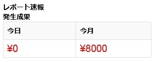
Link-Aで8,000円。
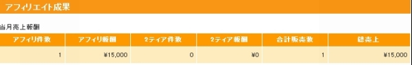
インフォトップで15,000円。
それとmobeeで14,304円。
（mobeeは報酬金額が出ないため画像なし）
合計で、売上金額：117,861円。
そして使用した広告費はこちら。
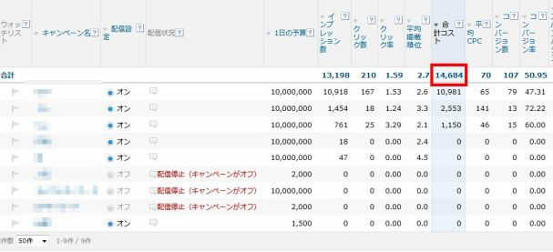
広告費:14,684円。
117,861円-14,684円＝103,177円
ギリギリですが何とか10万円を突破することができました。
実践ベースでいくと、79日という3か月弱で達成できたことはとても嬉しいことですが、その一方でとても長く感じたように思います。
・挫折（失敗）だらけの3か月
結果的に10万円を突破したましたが、思えば壁にぶち当たってばかりの3か月だったように思います。
・マニュアルを見ても書いてある言葉が理解できない
・サイトの作り方がよくわからない
・yahooへの出稿の仕方がわからない
・審査に落ちまくって出稿できない ←個人的にはここが一番ツラかった・・
・売れる案件が見つかったと思ったら配信停止に
・アフィリリンクが販売ページに飛んでくれない
・・などなど失敗だらけでした。
その度に何度も諦めかけていましたが、 ブログ の存在をはじめ、セミナーで出会ったアフィリ仲間などのおかげでここまで続けてこられることができました。
PPCアフィリエイトを通して思ったことですが、自分が続けられる状況をまず作ることが何より大切なことかもしれません。
・10万円の内訳
これまで出稿してきた数は100個ほどになりますが、はっきり言って売れる案件はこのうちの数個でした。
実際には1つの案件で約5万円の売り上げ、1つの案件で約3万の売上、他はちらほら売れてくれたという感じです。
80対20の法則というのがありますが、まさにそんな感じですね。
2割の案件で8割の売上を上げてくれました。
（よくよく考えてみれば2割どころではありませんが・・）
しかしながら単純な話、当たり案件に出会えれば10万円いくことは可能だということを経験できました。
その当たる案件に出会うまでが勝負というところです。
・なぜ当たり案件に出会うことができたのか？
私はこれまで基本的には商標名キーワードOKの案件を中心に出してきました。
私が入っている会員制登録サイト、「 琉球の酒場プレミアム 」内にあるパートナーASPを中心に、商標名キーワードOKの案件を探しだし出稿していました。
もちろんやみくもに出稿しても数が多いので、
・商標名の月間検索数
・販売ページに出稿審査に引っかかりそうな文言、表現はないか
・商標名を検索した時に検索結果としてライバルがどれくらい出ているか
・ライバルのLPはどのようなつくりになっているか
などをリサーチしたうえで選定していきました。
その中で100個のうち2，3個の当たり案件に出会うことができたというわけです。
その一方で大半は当たらない案件でした。
・当たらない案件はどのように対応（処理）したか？
100個出稿しても95個は当たらない案件です。
またその95個の中でもいろんなパターンがあります。
１．広告費だけかかって全く売れない案件
２．検索自体されないので売れないが広告費はかかっていない案件
３．1件売れたがその後売れず徐々に赤字になる案件
１．広告費だけかかって全く売れない案件
これに関しては、損切の意識を持つことが大事だと自分に言い聞かせていました。
私の場合、「報酬金額分の広告費を使っても売れない場合は出稿停止」というルールを設けていました。
例えば3,000円の報酬金額の案件を出稿した場合、3,000円の広告費を使っても1件も売れない場合は出稿停止にしていました。
そうすることで損失を最小限に抑えようと思っていました。
２．検索自体が全くされないので売れないが広告費はかかっていない案件
これに関しては、私の場合放置していました。
・・というとちょっと大げさですが、クリック単価を少しずつ上げていき、それでも検索されないときは放置していました。
クリック単価の設定が低すぎて、広告が表示されないことがあります。
私は結構用心深い方で、出稿する時点ではクリック単価を低めに設定して出稿していました。
だいたい50円位から出稿していました。
そこから徐々に単価を上げていくのですが、200円くらいにしてもインプレッションが上がらないときはもう放置です。
広告費はかかっていないので売れたらラッキーくらいの気持ちでした。
３．1件売れたが、その後売れず徐々に赤字になる案件
一番難しいのがこのパターンでした。
これが自分にとって悩ましい案件でした。
1件売れた後、しばらく売れないけれど、このまま出していればまた売れるかもしれない。
でもこの後も全然売れず赤字が拡大してしまうかもしれない・・
このジレンマで悩まされていました。
結果として、私は出稿停止にする決断にしました。
これも私の中でルールを設けた1つです。
「1件売れても赤字が出れば出稿停止にする」
これにより全体的には赤字の縮小につながっているかなと思います。
・これまで実践してきてのまとめ
繰り返しになりますが、10万円の壁というのは一言で言うと、「当たり案件に出会うかどうか」が全てだと思いました。
そんなにすぐに出会えれば苦労しないのですが、見つかるまでの道順を自分なりにルール化していくことが1つの近道かなと感じています。
また、見つかったとしてもその案件が配信停止になったり、商標名キーワードNGになってしまうことも多々あるので、常に当たり案件を見つけていくことが大事になってきます。
なかなか大変な作業ですね。
ただここまでようやくこれたので、ここからまたステップアップして進んでいきたいと考えています。
私はここまで、「月10万円を達成する」と宣言してアフィリエイトをやってきました。
そして、ついに念願の月10万円を達成することができました。
これは自分にとって未知の領域で嬉しいことに変わりはありません。
ただ、ふと思うことは「ここまできてこれで終わってしまってもいいのだろうか・・」という気持ちがありました。
試行錯誤しながらここまでやってきた経験をここで終わらせてしまうのは何とも惜しい。
人間というのは怖いもので、やらなくなるとこれまで学んできたことや経験したことが恐ろしいスピードで忘れていきます。
10万円を達成して、今まで見えなかった新しい景色も見え始めてきていました。
「さらなる高みに挑戦してもいいのではないだろうか。」
いままでは10万円以上のイメージは全くと言っていいほどできなかったのですが、ここにきて新たな可能性を感じられるようになってきました。
もしかして30万円いくことも可能ではないか・・と。
いや、ここまできたら次はぜひとも30万円の壁を突破してみたい。
ふつふつとその感情が湧きあがってきていました。
そしてここから新たな段階に入ってきたいと思っています。
第二章として「30万円までの道」編をブログで新たにスタートしております。
⇒「 PPC アフィリエイトで月 10 万円稼ぐブログ （ 30 万円までの道 ） 編 」
ここからの道のりはおそらく今までやっていたことだけでは、30万円を達成することは難しいと考えています。
10万円まではおそらく「やるべきことをやれば達成することは十分可能」ということを身をもって経験しました。
商標名キーワードOKの案件を探してLPを作成して出稿していく。
結果としてはほぼこれだけで10万円いくことができました。
まあ、それまでには試練がいくつかありましたが・・。
しかしながら、今後これだけで30万円いくのは正直なかなか難しいと感じています。
商標名キーワードOKの案件にも限りがあります。
そして、売れ始めた途端に商標名キーワードがNGになるということもこれまでの期間で経験してきました。
だとするとこれまでとは違う方法を実践していく必要があります。
今私の中で、一番参考にしているマニュアルは、 SS マスターガイド - PPC アフィリエイト 、こちらになります。
こちらはyahooのスポンサードサーチを使って、Gmailの取得方法から説明してあるような経験ゼロの方でも取り組めるような内容になっています。
この中では、案件の選び方やキーワード選定が自分の中では特に参考になっているのですが、この部分をもっと強化していく必要があると思っています。
これからの私のキーポイントは「脱商標名キーワード」になります！
第2章としてこのあたりを中心に実践記としてブログで記しています。
⇒「 PPC アフィリエイトで月 10 万円稼ぐブログ （ 30 万円までの道 ） 編 」
最後までお読みいただき誠にありがとうございました。
ここまで読まれてどう思われましたでしょうか？
「アフィリエイトって意外と簡単かも・・」
「自分がやったら10万円稼げるか怪しい・・」
いろんなご意見があるかもしれません。
私としてはこの書籍を読んでいただき、少しでも前向きな気持ちになっていただければ嬉しく思っております。
ネットビジネスもロクに知らないド素人がアフィリエイトを始めて、月10万円を達成することは可能だということを知ってもらうことがこの書籍で伝えたかったことでした。
私もアフィリエイターとしてはまだまだ一人前にはほど遠い存在です。
ここからさらに学んでいくことは山ほどあります。
しかしながら、これを読んでいただき少しでも行動を起こすきっかけとなれば幸いです。
私自身としても、この電子書籍つくりは非常に良い経験になったと感じております。
ここからさらに成長していくための1つの通過点として、この経験を役立てていきたいと考えております。
著者:ひろし
自営業として本業を持っている傍ら、結婚を機に「今よりも収入の幅を広げたい」と思いPPCアフィリエイトを始める。
何度も壁にぶち当たり何回も挫折しかけるが、アフィリエイト開始３ヶ月で月１０万円を達成。
これまでの成功や失敗の詳細をブログで実践記として情報発信している。
現在は月３０万円の収入達成に向けて日々奮闘している。